1000 NOUNS
An exploration into the first 1000 Nouns created by NounsDAO.
For 908 days, Nouns have been spontaneously coming into existence. Across the following page, we will dive into the first 1000 Nouns, looking at the traits that occur most and least frequently through the collection.
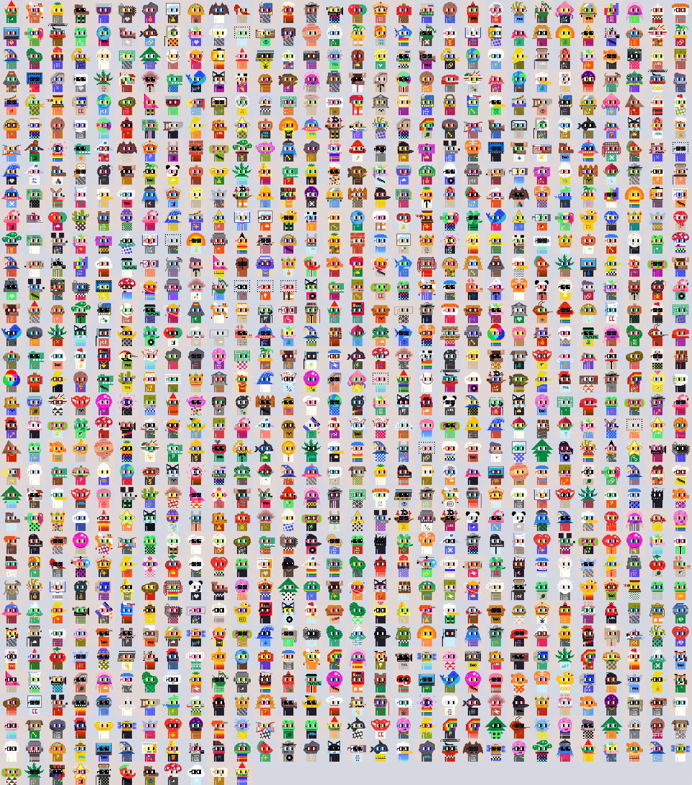 MINT FIRST 1000GNOME 0, MEET GNOME 1000
On Feb. 1st 2024, Nouns mints its 1001th Noun, Noun 1000. The Gnome, a not so subtle nod to Noun 0, its big brother. This event signifies the end of 3-digit Nouns as the project reaches ~2.5 years old.
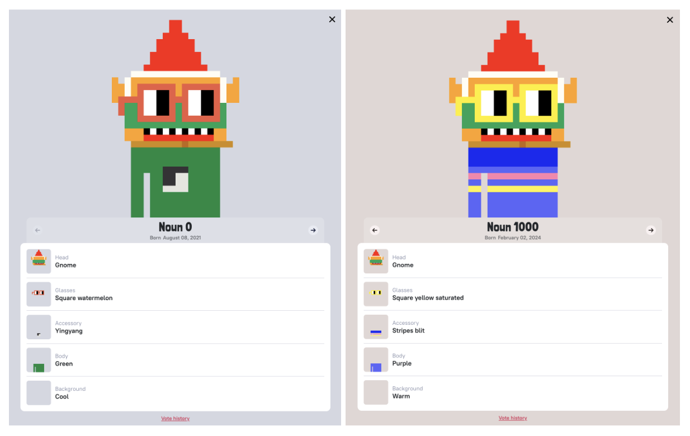MOST COMMON NOUN TRAITS
When we dig into the most common traits we find a clear winner with the frog head. Square Black Noggles are the most common glasses. Grayscale-1 body came in #1 for body color, while accessories actually covered the body and had a three-way tie for first place: Pride Decay, Gray-Scale-1, and Gray-Scale-9.
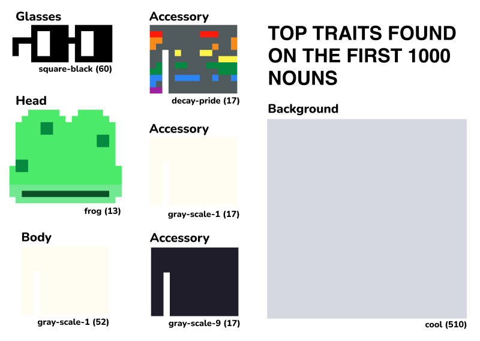When we combine the top traits to make the "most common Noun" we find... Oh, hey @toady_hawk! ... is that you?
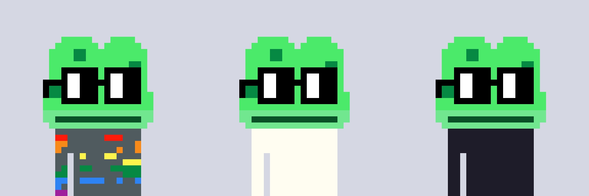 MINT COMMON NOUNSCounts of the most common traits:
- Background: Cool (510)
- Body: Grayscale-1 (52)
- Accessory: Gray-scale-9 (17), Gray-scale-1 (17), Decay-Pride (17)
- Head: Frog (13)
- Glasses: Square Black (60)
WHO IS SETTLING ALL THESE NOUNS?
It's important to note that Nouns are randomly generated on a block-by-block basis. And because of this, Nouns can be "seen" before they are minted. This gives users the ability to "settle" the Noun currently on the block, if they're fast enough. Many of the aesthetic Nouns minted have been spotted and quickly settled by loyal Nouns followers. A special shout out to The Noun Square (TNS) who tirelessly watches the blocks after each auction to help mint the next Noun!
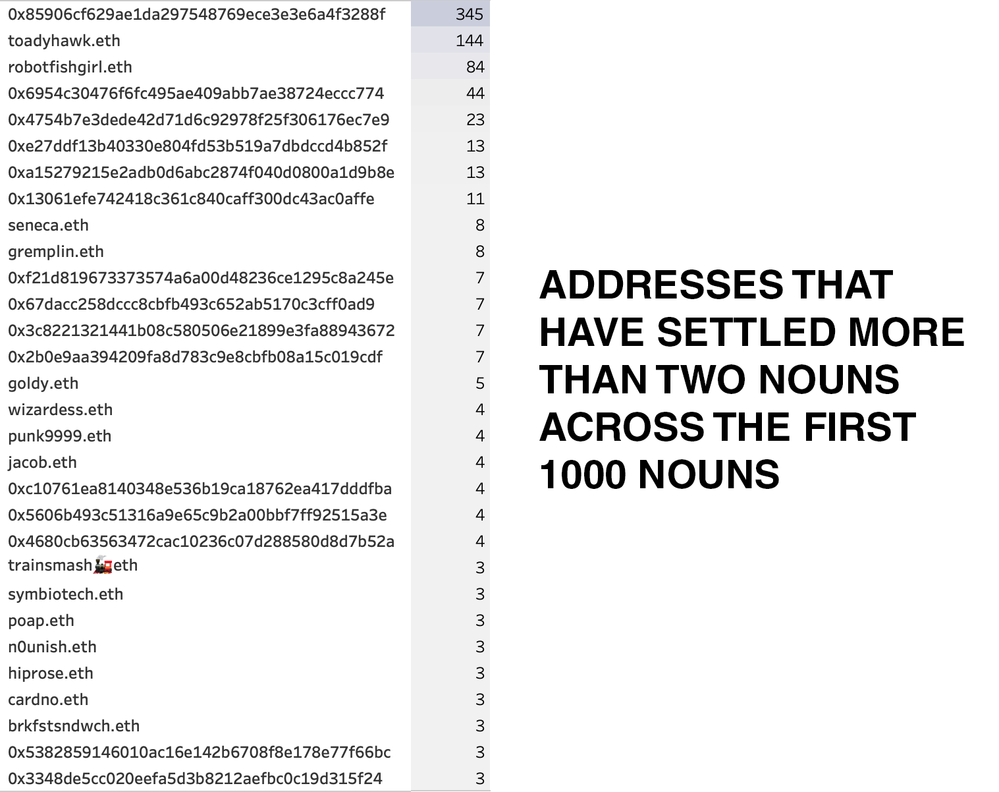MOST COMMON GLASSES (NOGGLES)
When we dig into the most common Noggle colors we see a trend leaning towards black Noggles — Both the top two most common in the collection (across 60 and 58 Nouns respectively). Deep teal, added to the collection on the first Nouniversary (1 year anniversary) is the least common. Oddly, "grass" color Noggle was also created at the same time and appears on 16 more Nouns with 36 total occurrences. Check out the full ranking of the first 1000 Noggles below:
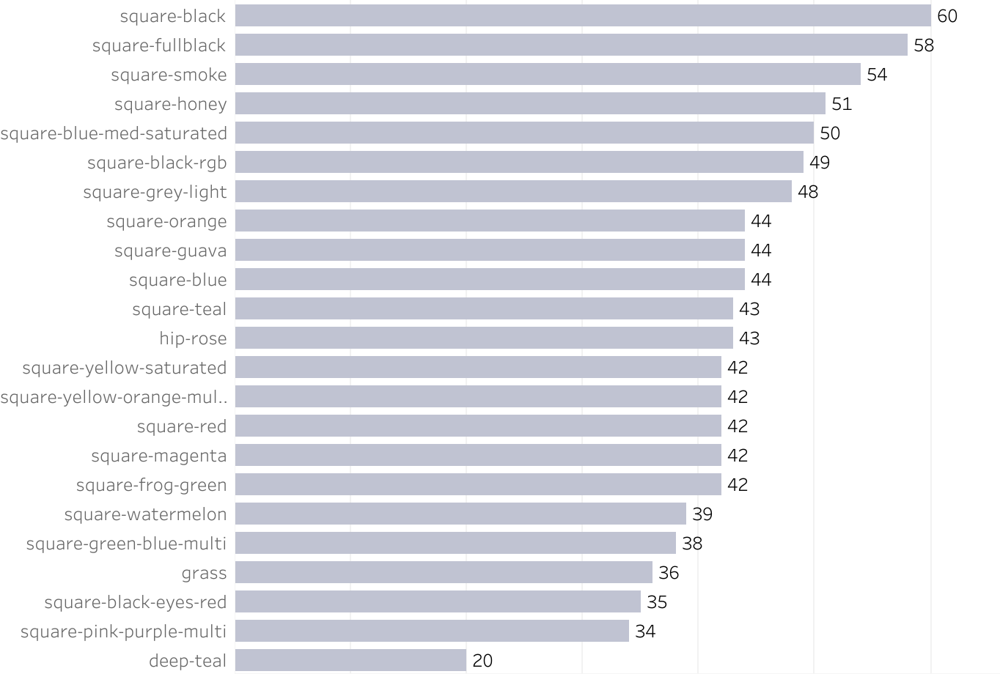 Check out the 20 Nouns with Deep Teal Noggles on Probe.wtf: 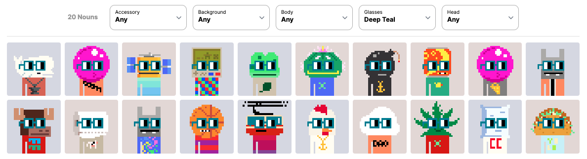MOST COMMON HEADS
The frog head is the most common head in the collection with 13 minted in the first 1000 Nouns! Next up is a tie between the Unicorn and Cat head traits. In the first 1000 Nouns only 21 head traits have been minted just once, including but not limited to the Owl, Hardhat, Crane, Basketball, and Tooth. Below you'll find a list of all of the head traits and the number of times they've been minted across the first 1000 Nouns:
 Check out the 13 Nouns with the Frog head trait on Probe.wtf:
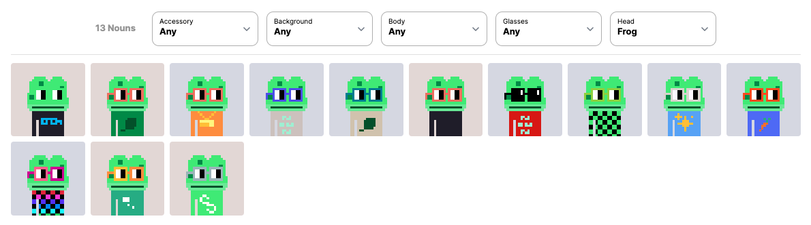
Check out the 13 Nouns with the Frog head trait on Probe.wtf:
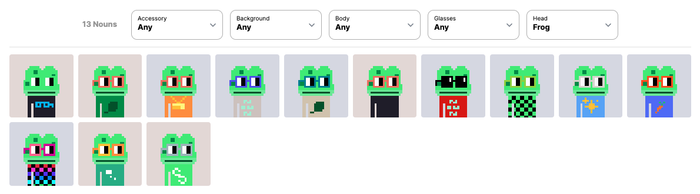
MOST COMMON BACKGROUND COLOR
The coin flip between Nouns background colors has landed on "cool" 20 times more than "warm" across the first 1000 Nouns (51% cool, 49% warm).
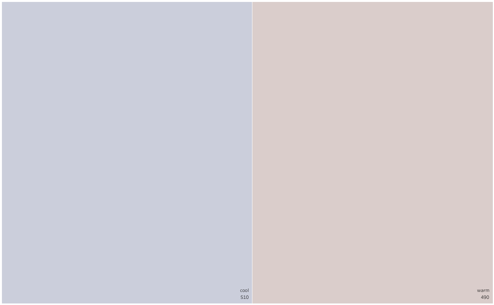MOST COMMON BODY COLORS
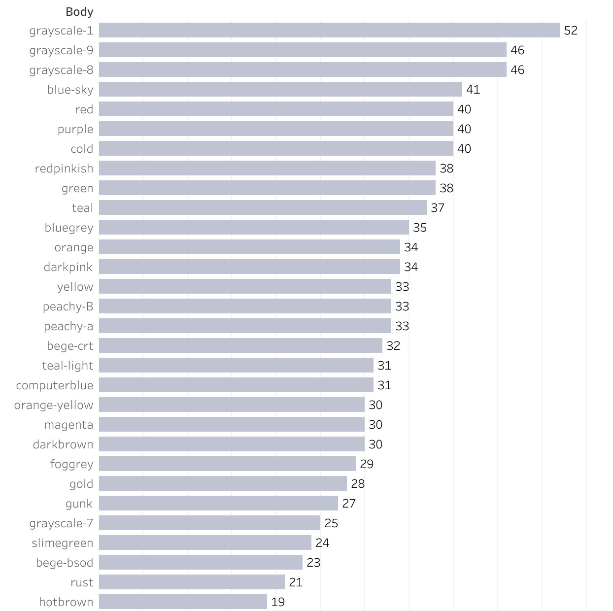MOST COMMON ACCESSORY
Gray-scale-1 and gray-scale-9 are top accessories. I guess auction settlers seem to like plain Nouns without bold accessories. Wave is the most rare accessory, only being minted one time across the first 1000 Nouns.
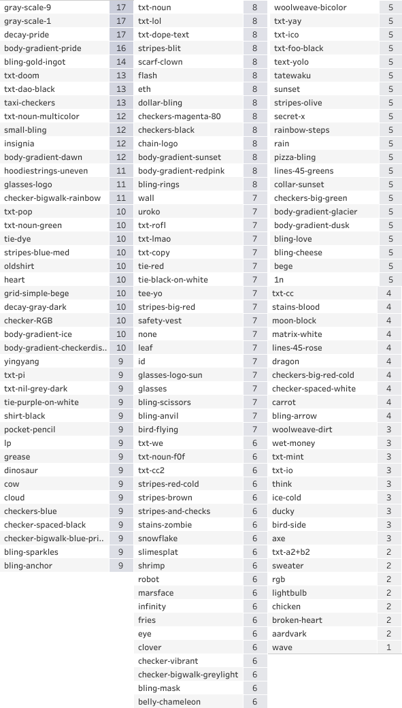NOGGLE x HEAD COMBINATIONS
The following charts show Noggle and Head trait combinations from Noun 0–1000 that have occurred more than once. Only two combinations have occurred three times, while two-trait Noggle x Head "twins" have occurred 72 times. The following shows the combinations and which Nouns they were minted to:
.png)
.png)
Check out more traits on Probe.wtf or Nouns.wtf/explore. Thanks for reading!